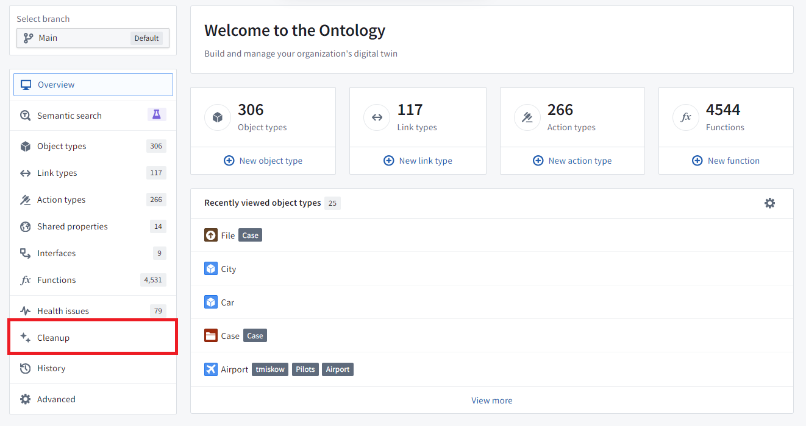
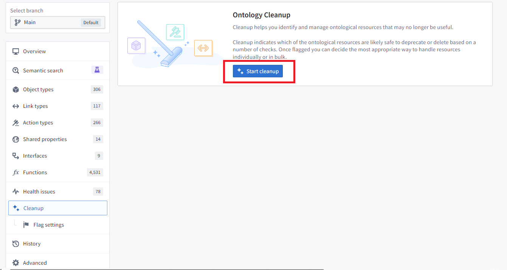
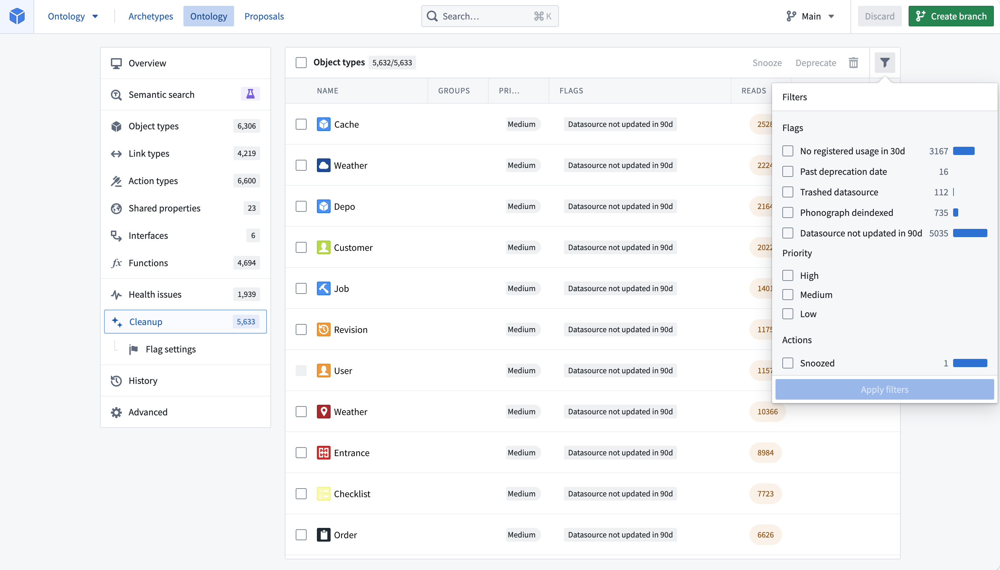
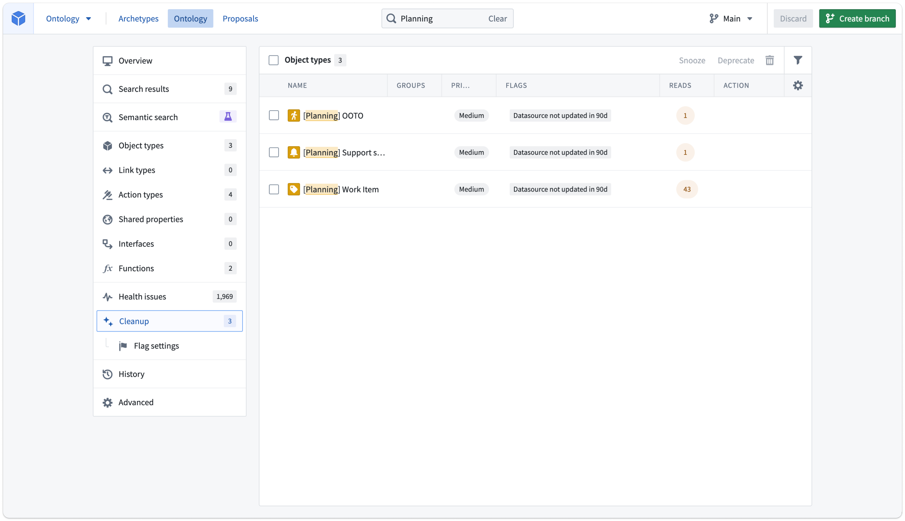
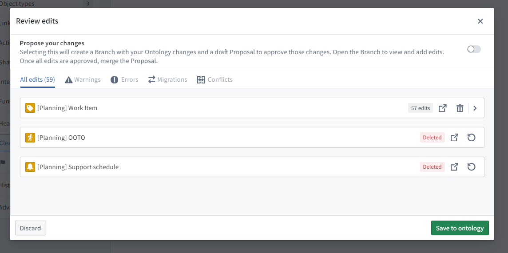
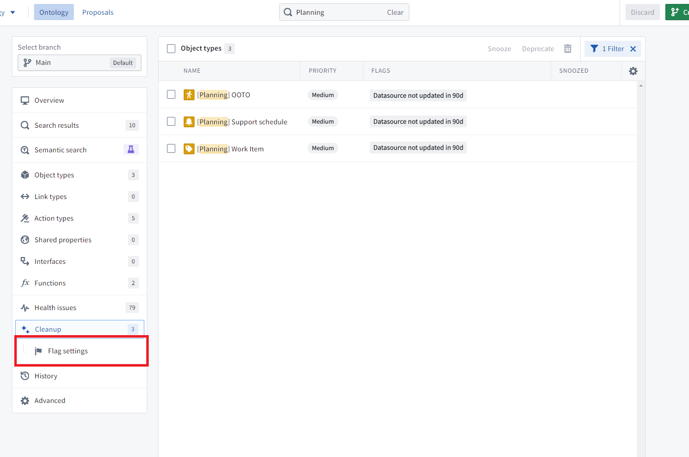
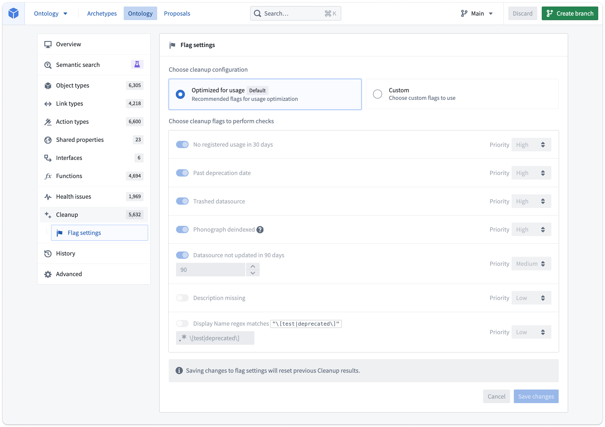

The Ontology cleanup tool is a safe way to delete object types, and provides a number of benefits, including:
The tool aims to help Ontology editors determine the safety of deleting an object type and provides a deprecation option which informs object type users of its future removal.
The view can be accessed from the home page of the Ontology cleanup tool.

When you opt to Start cleanup, the tool may take time to find cleanup candidates based on the size of your Ontology.

The resulting list of object types operates similarly to the other pages accessed from the home page that display lists. The list can be filtered to specific flags or an object type group that you are responsible for. You can also customize which columns are displayed in the table.

By default, the table is sorted by the highest priority among the flags that an object type triggers.
Here is an example where we have filtered down to the âPlanningâ workflow, a workflow that was being developed but never released.

Select the three object types using the in-line checkboxes.
There are three options for managing these object types:
Once you act on an object type in your queue, it disappears from the queue. Use the table filters to view all the actions you have already selected.
Deprecation and deletion are staged the same way as normal Ontology modifications. In the example above, the âWork Itemâ object type has objects with user edits, so it can be deprecated, while the other two deleted. Selecting Save in the top right enables saving the changes directly to the Ontology or creating a proposal to request review from another user.

The cleanup page contains a subpage that allows you to customize the flags used and their respective priority.

You can configure flag settings on this page, with a choice of using either the default set or custom flags.

Like snoozing object types from the queue, this is an individual customization that does not affect other Ontology editors.
When you save changes and return to the main Cleanup tab, you will be prompted to recalculate the cleanup queue.
Note that if using a custom flag setup, new flags that get added in the future will not be automatically turned on if they are turned on when using the default set of flags.
The following list of flags is aimed at answering common issues, but is not exhaustive:
deprecated status and the deprecation date field is in the past.\[test|deprecated\] would match object types that have [test] or [deprecated] in their display names. For example, if a common pattern at your Organization is to mark object types in user acceptance testing with the prefix UAT - or Testing -, you would use the regex UAT -|Testing - to find all object types matching this pattern. Supports ECMA (JavaScript) regex syntax.